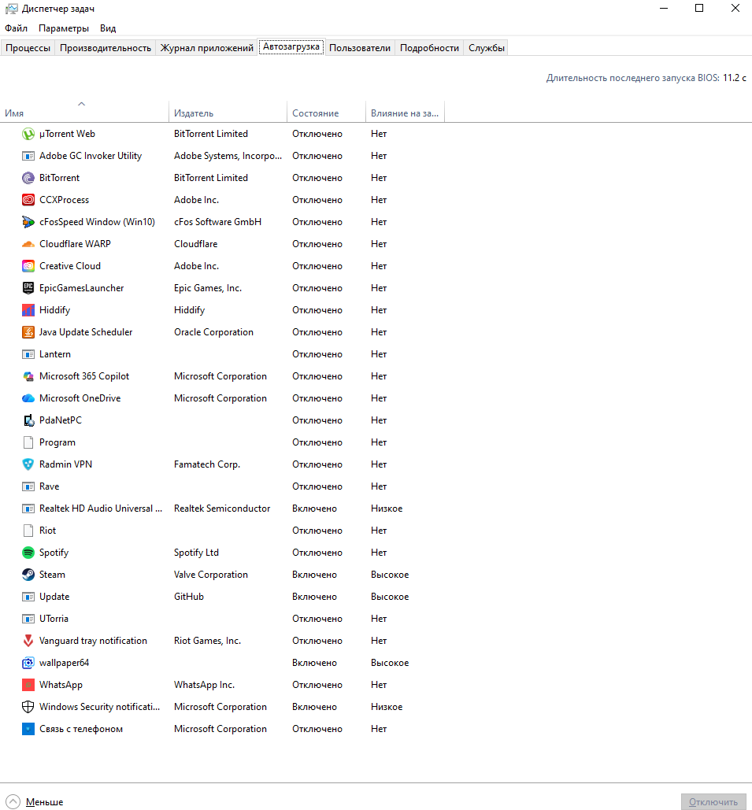
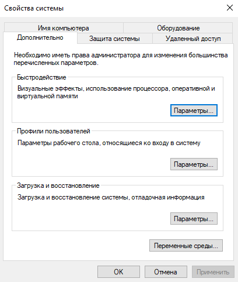

1. Очистка автозагрузки
Программы в автозагрузке замедляют запуск системы и потребляют ресурсы в фоне.
Шаг 1.1: Диспетчер задач

Нажмите Ctrl+Shift+Esc → вкладка "Автозагрузка"
Отключите ненужные программы (мессенджеры, облачные хранилища, updater'ы)
# Для продвинутых пользователей:
# Откройте PowerShell и введите:
Get-CimInstance Win32_StartupCommand | Select-Object Name, Command, Location
2. Отключение визуальных эффектов
Анимации и эффекты потребляют до 15% ресурсов системы.
Шаг 2.1: Настройки производительности

Win+R → sysdm.cpl → вкладка "Дополнительно"
Нажмите "Параметры быстродействия" → выберите "Обеспечить наилучшее быстродействие"
⚠️ Совет: Можно оставить только "Сглаживание неровностей экранных шрифтов" для лучшей читаемости.
Результаты оптимизации
30-50%
Ускорение запуска
15-25%
Экономия RAM
20-40%
Снижение нагрузки CPU
+10-20 ГБ
Свободное место